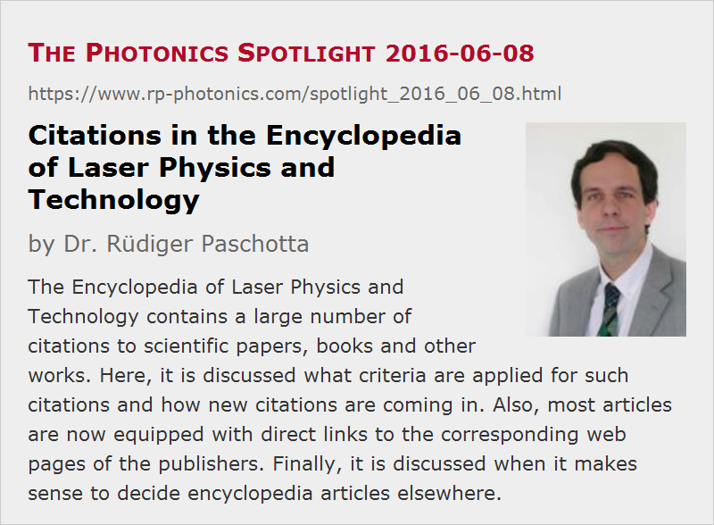

Citations in the Encyclopedia of Laser Physics and Technology
Posted on 2016-06-08 as a part of the Photonics Spotlight (available as e-mail newsletter!)
Permanent link: https://www.rp-photonics.com/spotlight_2016_06_08.html
Author: Dr. Rüdiger Paschotta, RP Photonics Consulting GmbH
Abstract: The Encyclopedia of Laser Physics and Technology contains a large number of citations to scientific papers, books and other works. Here, it is discussed what criteria are applied for such citations and how new citations are coming in. Also, most articles are now equipped with direct links to the corresponding web pages of the publishers. Finally, it is discussed when it makes sense to decide encyclopedia articles elsewhere.

I suppose that most readers of this article are also readers of my online Encyclopedia of Laser Physics and Technology, and might be interested in various aspects concerning citations in that encyclopedia. Such literature references are presented in the bibliography sections occurring at the end of about 380 of the articles. They are largely references to scientific papers in peer-reviewed journals, but there are also some references to books and in a few cases even to certain web pages.
Criteria for Citing
You may wonder how I decided which articles or books to cite. There are many possible criteria, but my primary criterion is the usefulness for the readers. For example, it may be nice to give credit to those researchers publishing on a certain topic for the first time, but that first paper is not always particularly useful; it happens, for example, that important aspects have not yet been fully understood. On the other hand, review papers can be enormously useful, even though of course they come at substantially later times.
The quality of a paper is of course also a very important aspect, having a great impact on the usefulness for the reader. So I am of course particularly happy to cite a paper which I find technically very convincing and written in a very understandable way, while I would hesitate citing papers which I do not find convincing and understandable. On the other hand, I unfortunately do not have the time to check every cited paper in detail, so I cannot guarantee that what is cited is always perfectly valid and well done. (Sadly, many published papers contain deficiencies which should not occur – at least after a thorough review.)
Novelty is an important aspect for reviewers, deciding whether the paper should be published or not. For citations in my encyclopedia, however, I do not find that particularly relevant for the usefulness. If a later paper does not add a lot of new knowledge, but explains or discusses things in a substantially better way, it might be more useful than the earlier paper, presenting a novelty.
Sometimes, I also cite papers presenting some interesting additional aspects, even if those are not discussed in the encyclopedia article. It might just be useful for reader to read such an article in addition; not everything is meant as a reference for what has been said in my own article.
Suggestions for Additional Citations
I am regularly scanning the new papers appearing in various journals, and I then often add some citations to encyclopedia articles. So these bibliographies are still growing.
Suggestions from readers for additional citations are also welcome. It is okay even if the authors of a paper themselves approach me with such a desire; one should simply accept that it is to my discretion whether or not I take that.
Having read what I wrote above, you know what papers will have good chances of being cited.
Links to Journal Web Pages
Obviously, it is very nice for readers if they can not only read a citation but also find it equipped with a link which directly brings them to the corresponding web page of the publisher, where they may get the abstract and the full text. Until recently, I could provide this only for a quite limited number of journals – essentially those where the corresponding URL could be directly calculated from the data of the reference (volume and issue number, page number and year). This is the case for the common OSA journals like Optics Letters, but not for the also often relevant IEEE journals, for example. A couple of weeks ago, I went through the painful job of finding the relevant links for most of these other papers as well. Now, such links are missing only in relatively few cases, where it was not possible or too difficult to find them. I assume that many readers will appreciate that improvement very much, so that the popularity of the encyclopedia grows even further.
Citing Encyclopedia Articles?
Please be aware of the possibility to cite articles of the encyclopedia elsewhere – for example, on web pages, in reports, in Wikipedia articles, in social media and also in scientific papers and books. Many will hesitate to cite an online resource in a scientific paper, since in principle it may disappear later on or may be changed. However, the articles of this encyclopedia will presumably remain at their locations for a very long time; I cannot see a reason to remove them or to move them to another location. They may well be changed (improved) later on, but that should not be a problem for a citation; you can, of course, include in your citation the date when you access the article.
Of course, there is also the print version of this encyclopedia, containing most of the articles currently found online. Only, that print version appeared in 2008, so that most articles are found there only in older versions. Also, think about your readers – the very easy accessibility of the online encyclopedia makes such a reference actually more useful to them than a reference to a book which they would find in a library!
So if the usefulness for your readers is also important for selecting citations, this is actually a big plus for the Encyclopedia of Laser Physics and Technology as well as for other online resources, as far as those can be trusted to stay there for a long time.
This article is a posting of the Photonics Spotlight, authored by Dr. Rüdiger Paschotta. You may link to this page and cite it, because its location is permanent. See also the RP Photonics Encyclopedia.
Note that you can also receive the articles in the form of a newsletter or with an RSS feed.
Questions and Comments from Users
Here you can submit questions and comments. As far as they get accepted by the author, they will appear above this paragraph together with the author’s answer. The author will decide on acceptance based on certain criteria. Essentially, the issue must be of sufficiently broad interest.
Please do not enter personal data here; we would otherwise delete it soon. (See also our privacy declaration.) If you wish to receive personal feedback or consultancy from the author, please contact him e.g. via e-mail.
By submitting the information, you give your consent to the potential publication of your inputs on our website according to our rules. (If you later retract your consent, we will delete those inputs.) As your inputs are first reviewed by the author, they may be published with some delay.
|  |
If you like this page, please share the link with your friends and colleagues, e.g. via social media:
These sharing buttons are implemented in a privacy-friendly way!